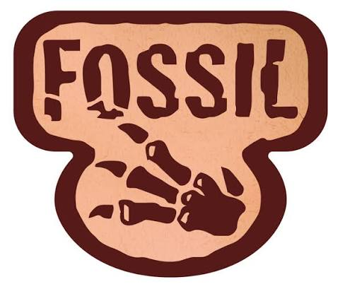
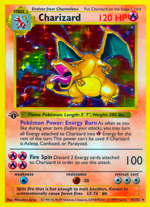
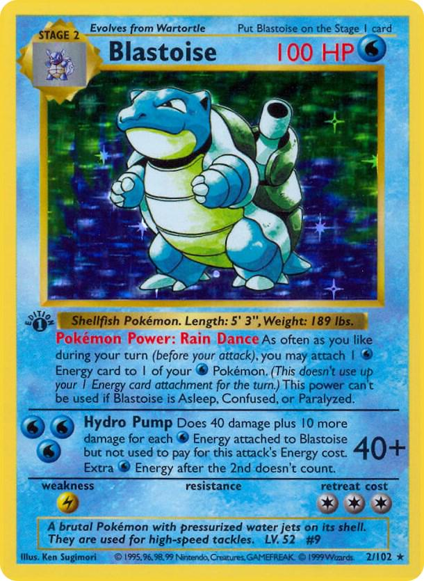
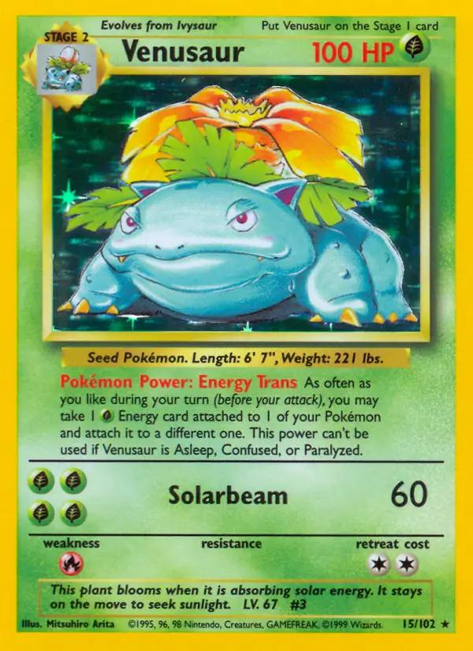

PokeBasics
PokeBasics
PokeBasics
PokeBasics
VINTAGE ERA

The Pokémon Base Set Era marked the beginning of the Pokémon Trading Card Game, launching in 1999 and introducing the original 151 Pokémon.
Explore some of the notable sets associated with this era.

Release : January 1999
The original Pokémon card set, featuring 151 Pokémon.
Release : June 1999
Expanded the collection with new Pokémon and artwork.

Release : October 1999
Introduced mysterious Pokémon, including legendary and fossil Pokémon.
Some of the most recognisable cards from this period.

Base Set

Base Set

Base Set